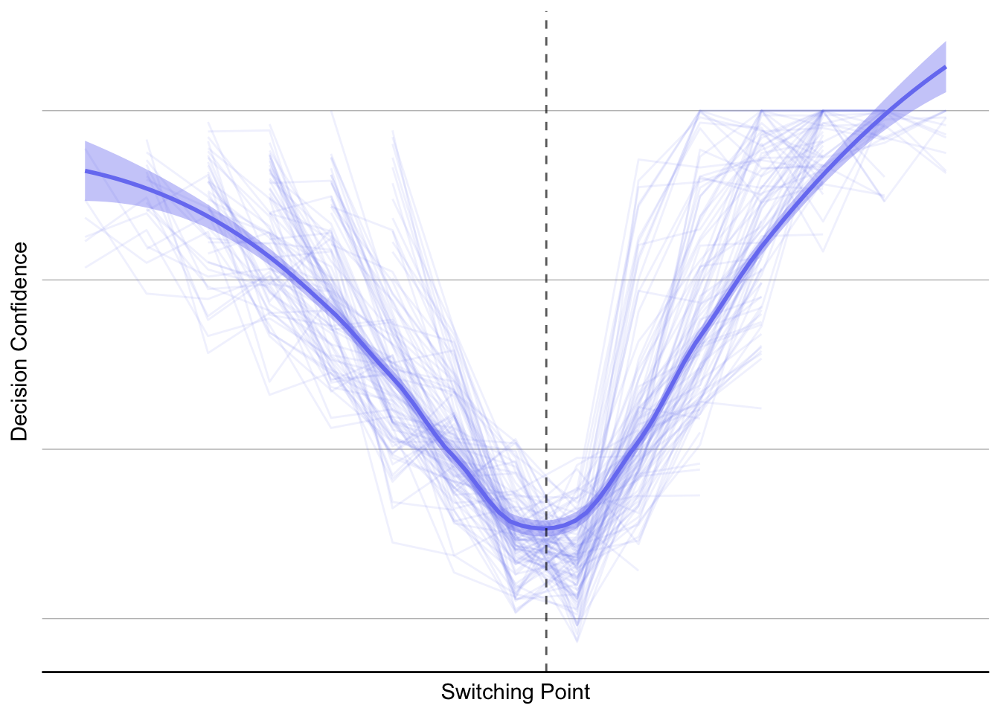
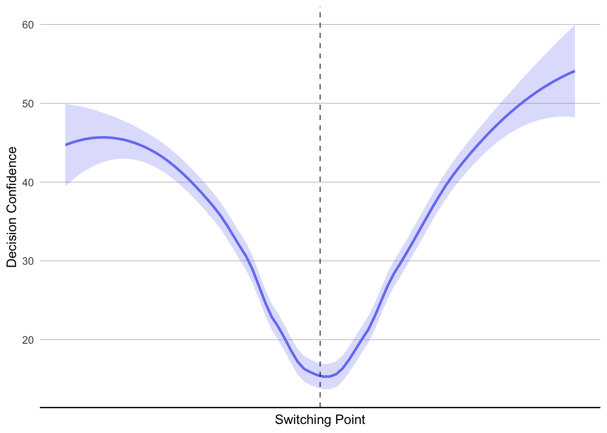

DT <- fread(file = '../../preference_expression/data/processed/2023-08-23_processed.csv',
integer64 = 'numeric',
stringsAsFactors = TRUE)
study_1_demographics <- DT[, .(participant_code,
female = ifelse(test = gender == 1, yes = 1, no = 0),
age)] %>% unique()4 The Sound of Certainty: Assessing Paralinguistic Indicators of Decision Confidence
Co-authored with Max Gaerth (Wharton) and Christian Hildebrand (University of St. Gallen), we have completed a pre-test as well as the first study. We are currently refining two additional studies, for which the experimental designs and software have already been developed, while the fourth study has not yet commenced. We plan to submit our findings to the Journal of Marketing Research, which is renowned for welcoming methodological contributions and for its high visibility within our research community.
4.1 Introduction
The average adult makes about 35,000 remotely conscious decisions each day. In fact, we make 226.7 decisions each day on just food alone (Hoomans 2015). Many of which can be thought of as trade-offs (see, e.g. Shaddy, Fishbach, and Simonson 2021 for a recent review). Think of a restaurant customer who chooses a protein for her ramen soup. She can choose between pork or chicken, for instance, and intuitively decides whether and how much to satisfy one consideration at the expense of another.
To understand how consumers resolve such trade-offs, prior research has established that the strength of consumer preferences, defined as the confidence with which consumers hold their preferences and the stability of their preferences over time, plays a pivotal role (e.g., Amir and Levav 2008; Yoon and Simonson 2008). To measure preference strength, researchers have traditionally relied on retrospective methods, such as questionnaire measures and conjoint analayses. These direct approaches rely on two strong assumptions: people are able to introspect their psychological states, and they are willing to report correctly the results of their introspection (Fischer et al. 2023, 2). To relax these assumptions, researchers have begun to append direct measures with response times. Response times are a promising indirect measure, that can be elicited unobtrusively and that reveals more information (than discrete choices stated in retrospective methods) because it is continuous. An extensive body of literature established that longer response times are associated to lower preference strength (see, e.g., Luce 1991; Bergert and Nosofsky 2007; Bhatia and Mullett 2018). However, response times can be noisy as they also capture many constructs unrelated to decisions (Konovalov and Krajbich 2019).
This research also focuses on how decisions are transmitted but considers vocal instead of manual communication. Vocal communication involves more than just the words that echo a decision (Mehrabian 1971; Gorodnichenko, Pham, and Talavera 2023) and comprises non-verbal elements such as tone, pitch, or pace (see, e.g., Zierau et al. 2023; Melzner, Bonezzi, and Meyvis 2023). These so-called paralinguistics can not only be measured continuously but also less controllable and more immediate. Contemplation, for instance, is associated with slower speech with longer pauses (Dasgupta 2017), anger is often associated with louder speech, and fear with greater pitch variability (Juslin and Laukka 2003; Clark 2005). Hence, paralinguistics offer a unique and unintended lens to reveal one’s inner thoughts and feelings that cannot be retrieved from text transcript.
Consider the ramen example again. Suppose we are attempting to determine which of two people, Peter or Bob, is more confident in his choice and suppose that both order pork with the exact same wording. With just this information there is no way to distinguish between them. Now suppose Peter orders loudly and clearly, whereas Bob may speak more quietly, raising the intonation at the end of the statement as if he was asking a question. Who has a stronger preference for one protein over the other? Since Peter communicated his choice more confidently than Bob, it is likely that he found it more delicious. In other words, Peter’s relative preference for pork was likely stronger than Bob’s; he was farther from indifference (i.e., the point at which she is equally likely to choose either option). Of course, if Peter and Bob differ on relevant characteristics such as age or culture, we might be misled about their preferences. It is thus an empirical question whether our example is actually feasible or speculation. This is a key question that we tackle in this paper.
The answer to this question has practical implications because voice analytics (i.e., the computational extraction of paralinguistics) is increasingly available to marketers as voice data is becoming ubiquitous. Due to the rise of voice-enabled technology and chat interfaces, consumers who used to search for information, make bank transactions, and choose products using only their keyboard or mouse, can now perform almost any computer-based task using voice commands. In 2022, it was estimated that 62% of all Americans aged 18 or older used some type of voice-enabled technology (e.g., smart devices), and of these, 57% indicated using voice technology daily (NPR and Edison Research 2022). Notably, one can easily imagine the adoption to further increase as major companies, such as Apple, released the first version of Apple Intelligence, its suite of artificial intelligence features that will improve their voice assistant Siri based on OpenAI’s ChatGPT (Malik 2024).
Building on the findings on preference strength, we hypothesize that certain vocal features will change as a function of consumers’ strength of preferences. To test this hypothesis, we utilize the technological advances mentioned above, chat interfaces and large language models, in a series of four studies that we outline below.
4.2 Study 1
The goal of Study 1 was to examine (a) whether preference strength on a given trial predicted how participants vocalized their choice (i.e., vocal features) and (b) whether vocal features could be used to predict preference strength.
Participants: 242 Prolific panelists (\(M_{age} =\) 39.96, \(SD_{age} =\) 13.14; 36% female) completed the study. We based our sample size on past work using within−subjects designs and a mouse−tracking task (cite). The study employed a 2 (conflict: low vs. high) × 2 (gender model: male vs. female) × 2 (replicates) within-subjects design.
Procedure and stimuli: Participants completed eight choice trials between two models. To induce differences in participants’ preference strength across all eight trials, we manipulated the decisional conflict associated with these choice trials. We pre-tested a variety of model headshots to identify pairs with high decisional conflict (where both models were equally attractive) and low decisional conflict (where one model was perceived as being more attractive on average). More information on the pre-test as well as the specific stimuli can be found in Section A.1 and Section A.2, respectively. Importantly, the presentation order of the models as well as pairs was randomized within participants. For each choice trial, participants were asked to say out loud which of the two models they find more attractive. After each choice, participants indicated the strength of their preference on a 101−point slider scale (i.e., 0 = Strong preference for Model X, 1 = strong preference for Model Y) on a separate page.
Before the start of the study, participants completed two trial rounds to familiarize themselves with the recording interface and test (or adjust) their settings to ensure a high audio quality. Subsequently, participants were led through the choice task described above. Lastly, participants indicated their age, gender, and environmental factors that could affect the quality of their recordings or trigger self-presentational concerns. Accordingly, they indicated whether they were alone or in a public space and whether they disguised their voice.
Results: These results suggest that vocal features can be a sensitive metric for strength of preferences within a given decision and that the variance is distinct from established implicit measures, such as response time.
Discussion:
4.3 Study 2
Participants will be randomly assigned to a 10-trial repeated measures design. They will indicate their preferred product version between two options (e.g., Diet Coke vs. Coke Zero) using a voice interface designed with oTree (Chen, Schonger, and Wickens 2016) and OpenAI’s Whisper API.1
Subsequently, participants will engage in a titration task for each of the 10 trials, where the price of the preferred product version will be increased incrementally (from 5% to 40% in 5% steps). For each price premium, participants will indicate whether they would choose to buy the preferred product version, or the less preferred product version.
This process will allow us to determine our outcome variable: the maximum acceptable price premium (MAPP) a participant would pay before switching to the less preferred product. Specifically, we will examine the relationship between preference strength, as measured by paralinguistic features, and MAPP. We hypothesize that consumers’ preference strength for one product over the other (which we approximate using the paralinguistic features) will significantly predict MAPP.
4.4 Study 3
In a first study, we ask whether we can learn how hard a decision is not by listening to what consumers say but how they say it.
Experimental Paradigm: We employ a Multiple Price List design (see, e.g., Andersen et al. 2006) and expose study participants to a series of ten decisions that differ with respect to their decision difficulty. More precisely, participants choose between two artificial products that differ only in their product ratings. Whereas the lower-rated product has a fixed price in each decision, the price of the higher-rated product varies between decisions. Table 4.1 summarizes these decisions.
| Decision | Quality A | Quality B | Price A | Price B |
|---|---|---|---|---|
| 1 | 3.8 | 4.2 | 200 | 200 |
| 2 | 3.8 | 4.2 | 200 | 204 |
| 3 | 3.8 | 4.2 | 200 | 209 |
| 4 | 3.8 | 4.2 | 200 | 213 |
| 5 | 3.8 | 4.2 | 200 | 218 |
| 6 | 3.8 | 4.2 | 200 | 226 |
| 7 | 3.8 | 4.2 | 200 | 232 |
| 8 | 3.8 | 4.2 | 200 | 240 |
| 9 | 3.8 | 4.2 | 200 | 246 |
| 10 | 3.8 | 4.2 | 200 | 254 |
Because both products share the same price in the first decision but differ with respect to their quality, product B weakly dominates product A. With these information being salient, consumers should choose product B and, importantly, they should be confident in choosing between the two.
As the price of product B increases over the course of the following decisions, the consumers face a trade-off between price and quality. Notably, this trade-off becomes more difficult as the price increases up to the point where product B becomes too expensive. From that so-called switching point on, the trade-off difficulty should decrease again. [How does decision difficulty relate to decision confidence?]
As a consequence, we expect the confidence with which consumers make these decisions to exhibit a U-shaped pattern that we illustrate for 100 simulated participants in Figure 4.1.

Crucially, participants communicate their decisions verbally as they make their respective choices. This enables us to not only measure what they say (to localize their switching points) but also to measure how they say it during a time closely aligned with their decision-making process.
To sum up, we build on an established paradigm that yields clear and intuitive predictions and modify it to record rich audio information which we can decode, transcribe and analyze to get a glimpse into the underlying psychological states that drive decision-making.
# IMPORTANT
# this code is just a copy of ../../preference_expression/studies/pre-test/scripts/analyses.qmd
# if questions arise, look into that file as it is documented
raw <- data.table::fread(file = "../../preference_expression/studies/pre-test/data/raw/all_apps_wide-2024-05-20.csv")
relevant <- c('participant.code', 'participant.label', 'participant.time_started_utc',
names(raw) %>% str_subset(pattern = ".*player.")) %>%
str_subset(pattern='intro|role|payoff', negate = TRUE)
tmp <- raw[participant.finished == TRUE,
..relevant]
names(tmp) %>%
# str_replace_all(pattern = ".*player.", replacement = "") %>%
str_replace_all(pattern = "\\.(player|subsession|group)", replacement = "") %>%
str_replace_all(pattern = "\\._?", replacement = "_") %>%
str_replace_all(pattern = 'choices$', replacement = 'decision') %>%
setnames(x = tmp, old = names(tmp))
sub <- c('participant_code', str_subset(string = names(tmp), pattern = 'pre_test'))
long <- data.table::melt(data = tmp[, ..sub],
id.vars = c('participant_code'),
measure.vars = patterns("condition", 'decision', 'choice', 'confidence'),
variable.name = 'round',
value.name = c("condition", 'decision', 'choice', 'confidence'))
long[, round := as.numeric(as.character(round))]
long[, confidence := abs(confidence)]
long[, choice_set := ifelse(test = decision <= 10,
yes = 1,
no = 2)]
long[, decision := ifelse(test = decision > 10,
yes = decision - 10,
no = decision)]
long[, choice_numeric := ifelse(test = choice == "A",
yes = 1,
no = 2)]
setorder(long, condition, participant_code, choice_set, round)
long[,
initial_choice := choice[1],
by = c("participant_code", "choice_set")]
long[,
first_swicthing_point := min(str_which(string = choice, pattern = "A")) - 1,
by = c("participant_code", "choice_set")]
# long[,
# next_choice := data.table::shift(x = choice_numeric, n = 1, fill = NA, type = "lead"),
# by = c("participant_code", "choice_set")]
long[,
switching_point := choice_numeric - data.table::shift(x = choice_numeric, n = 1, fill = NA, type = "lead"),
by = c("participant_code", "choice_set")]
long[,
num_switches := sum(switching_point != 0, na.rm = TRUE),
by = c("participant_code", "choice_set")]
long[,
rational := ifelse(test = initial_choice == "B" & num_switches <= 1,
yes = TRUE,
no = FALSE),
by = c("participant_code", "choice_set")]
long[rational == TRUE,
distance := decision - first_swicthing_point,
by = c("participant_code", "choice_set")]Validation: We tested this prediction in pre-test that was conducted online and where participants entered their preference strength manually using a slider. We recruited participants via Prolific and classified 68 participants as rational because they were only switching once. The resulting pattern, illustrated in Figure 4.2, matches the prediction.
p4 <- ggplot(data = long[rational == TRUE],
mapping = aes(x = distance,
y = confidence)) +
geom_smooth(method = 'loess', formula = "y ~ x",
alpha = 0.25, col = c_purple, fill = c_purple) +
labs(#title = "Fitted Confidence Pattern by Choice Set",
x = "Switching Point",
y = "Decision Confidence") +
# facet_grid(rows = vars(choice_set)) +
geom_vline(xintercept = 0.5, lty = 2, alpha = 0.66) +
layout +
theme(legend.position = "none",
# axis.text.y = element_blank(),
axis.text.x = element_blank(),
axis.ticks.x = element_blank()
)
p4
Identification: To learn whether we could describe the latent consumer confidence, we build on the experimental paradigm and the expected confidence pattern described above and illustrated in Figure 4.1 and Figure 4.2. In addition to the pre-test reported above, we will run another study where we will change the modality and ask participants to voice their decision. This will yield ten voice recordings per participant which we will use to extract the same vocal features we extracted in the previous studies. Building on the findings of Study 1 and Study 2, we can put the features with the highest predicted power to yet another test and (correlate and) plot them against the U-shape derived above.
4.5 Study 4
To promote the consumption, adoption, and ongoing usage of our research findings, we plan to develop a customized deep learning model for detecting preference strength in speech. To this end, we hire 24 North American voice actors and actresses who will speak statements in with varying degrees of certainty (uncertain, neutral, certain) and recruit Prolific participants for validation. Using these data, we will follow Gorodnichenko, Pham, and Talavera (2023) and use Librosa, a Python package, to extract vocal features. More specifically, we will extract 128 mel spectrogram frequencies which allows us to determine the level of loudness of a particular frequency at a particular time for each recording. In addition, a chromagram with 12 chroma coefficients will be extracted. The chromagram reflects the distribution of energy along 12 chroma bands (i.e., C, C#, D, D#, E, F, F#, G, G#, A, A#, and B) over time and, hence, can capture melodic and harmonic characteristics of audio. Moreover, we will extract 40 mel-frequency cepstral coefficients (MFCCs), which are discrete cosine transformations of the mel frequency spectrogram (as Gorodnichenko, Pham, and Talavera (2023) found it to improve their model).
After extracting the vocal features from each recording our data, we have a labeled dataset that split into training and testing data. We use the training subset to build and fine-tune a neural network using an established deep learning framework such as Keras.2 The testing data will then be used to evaluate the model’s performance using the following accuracy score:
\[ \text{Accuracy}(y, \hat{y}) = \frac{1}{n} \sum_{i=1}^n \mathbf{1}\{\hat{y}_i = y_i\} \]
where \(y\) and \(\hat{y}\) are the true and the predicted levels of certainty, respectively, and \(n\) is the number of audio files in the testing dataset.